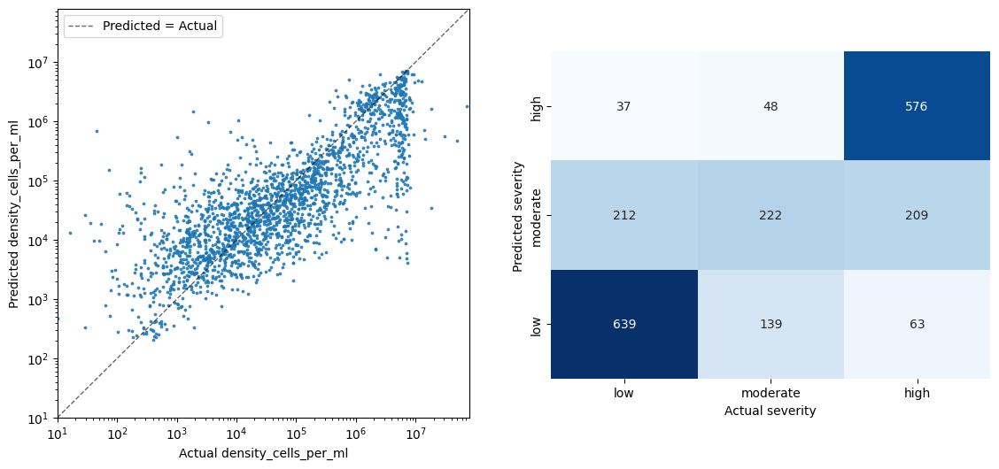
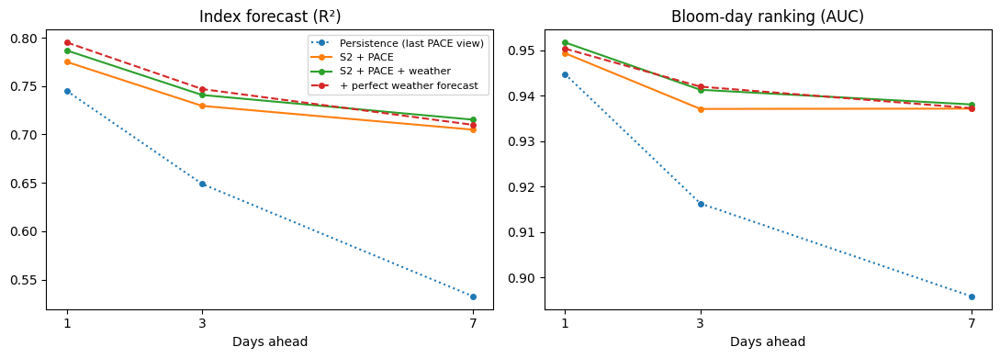
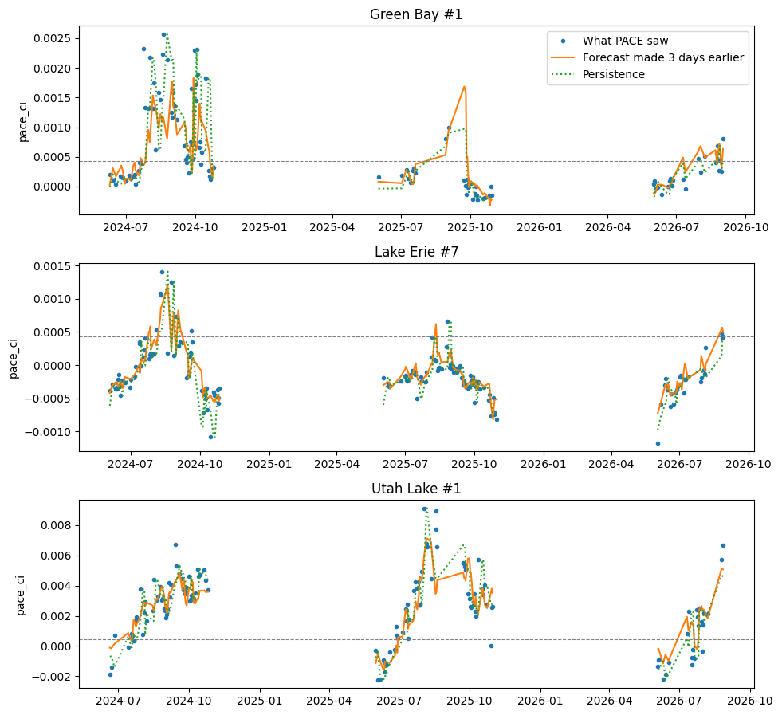
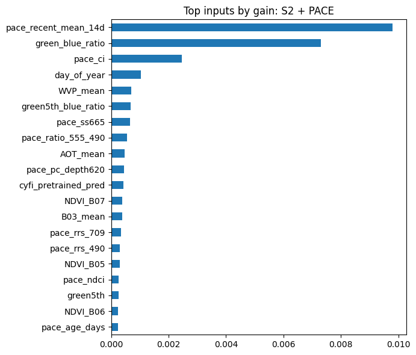
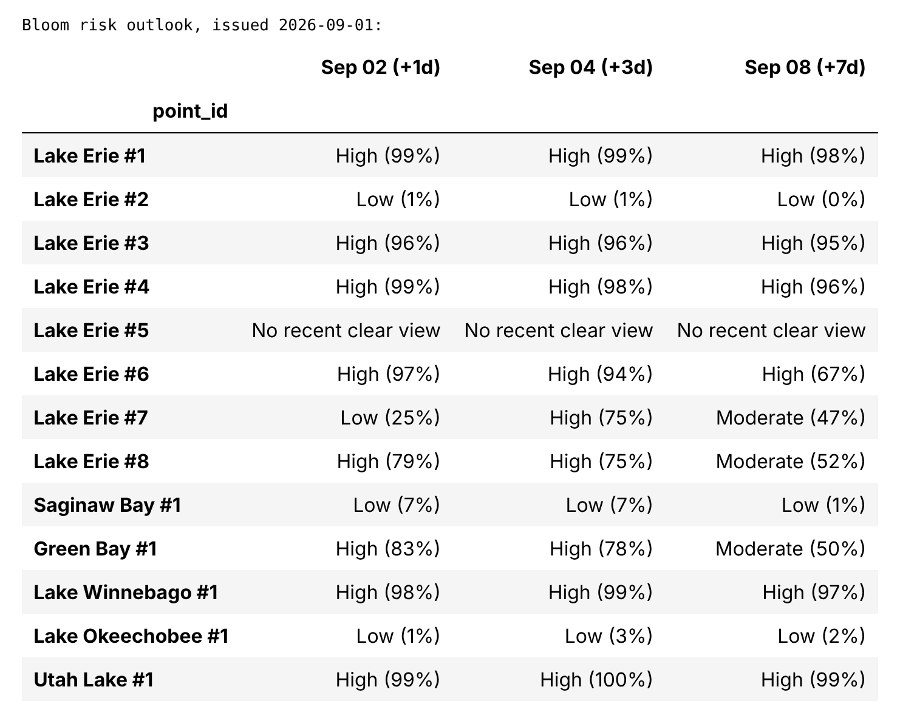

Forecasting Harmful Algal Blooms
Combining NASA's PACE satellite, Sentinel-2 imagery, and weather data in a machine learning model that warns of cyanobacteria blooms in lakes 1, 3, and 7 days ahead.
Short-Term Bloom Forecasting with PACE and Machine Learning
This project explores whether satellite data can forecast harmful algal blooms in lakes before they happen. Cyanobacteria blooms can produce toxins that close beaches and threaten drinking water supplies, but most monitoring only confirms a bloom once it is already there. The aim was to build a short-term forecast of bloom risk at specific lake sites 1, 3, and 7 days ahead, using NASA's PACE satellite together with Sentinel-2 imagery and weather data, so that warnings could be issued before conditions turn unsafe.
I first reproduced CyFi, the open-source model from NASA's Tick Tick Bloom competition, using 15,169 field-measured cyanobacteria samples from US lakes (the CAML dataset). On 3,034 held-out samples it explained 58% of the variation in cell density, but 29% of samples had no clear satellite image to predict from. To close that gap, I added NASA's PACE OCI sensor, which observes nearly every day and measures a full hyperspectral spectrum. I wrote a feature extraction module that turns PACE reflectance into pigment indicators, including a Cyanobacteria Index, NDCI, a 709/620 nm band ratio, and a 620 nm phycocyanin absorption depth. I then paired these with Sentinel-2 imagery and daily NASA POWER weather (temperature, wind, rain, and sunlight) for 13 open-water sites across six bloom-prone lakes: Lake Erie, Saginaw Bay, Green Bay, Lake Winnebago, Lake Okeechobee, and Utah Lake.
Each forecast only uses data from before its cutoff date, so the model never sees the future. I trained LightGBM models to predict the PACE bloom index and the chance of a bloom day 1, 3, and 7 days ahead, and scored them with week-grouped cross-validation against a persistence baseline that assumes conditions stay the same. At 7 days ahead, the model explained 72% of the variation in the bloom index compared with 53% for persistence, and ranked bloom days with an AUC of 0.94 compared with 0.90. Trained only on 2024 and 2025, it still reached an AUC of 0.93 on the unseen 2026 season. The forecast targets the bloom index PACE observes rather than measured toxin levels, and skill drops on lakes the model was not trained on, so the next step is adding more lakes and field validation. All work was done in Python using earthaccess, pandas, scikit-learn, LightGBM, and matplotlib.
Figure Gallery

Reproducing NASA's Tick Tick Bloom model (CyFi) on 3,034 held-out field samples. Left: predicted versus measured cyanobacteria density on a log scale, with the dashed line marking a perfect prediction. Right: how often each severity class was predicted correctly. The model explained 58% of the variation in density and placed 67% of samples in the correct severity class.
Forecast skill 1, 3, and 7 days ahead. Left: how closely the forecast bloom index matched what PACE later observed (R²). Right: how well each model ranked bloom days above normal days (AUC). The satellite models (solid lines) stay well above the persistence baseline (dotted line), and the gap grows with lead time, reaching an R² of 0.72 versus 0.53 at 7 days.
3-day forecasts (orange) compared with what PACE observed (blue dots) at Green Bay, Lake Erie, and Utah Lake over three bloom seasons. Each forecast was made by a model that never saw that week of data. The dashed grey line marks the bloom threshold, and the forecasts track both the rise and the decline of each season's blooms.
The inputs the 7-day forecast model relied on most. The top two come from different satellites: PACE's two-week average bloom index and Sentinel-2's green to blue ratio, a classic sign of algae. PACE adds daily bloom history while Sentinel-2 adds 10 to 20 m detail, which is why the combined model beat either satellite alone.
A 7-day bloom risk outlook issued September 1, 2026, giving each lake site a Low, Moderate, or High rating and the probability of a bloom 1, 3, and 7 days ahead. Lake Erie, Lake Winnebago, and Utah Lake stayed at High risk, Saginaw Bay and Lake Okeechobee stayed Low, and sites with no recent cloud-free view were flagged rather than guessed.